Home / Past papers / MLF End Term / this paper
Machine Learning - Bs In Data Science/ Electronic Systems Foundations 13 Sep 26 - 13 Sep 2026
Elapsed 00:00
Consider the following least-squares problem:
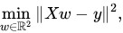
where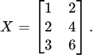
Suppose one least-squares solution is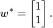
Which of the following is/are correct?- The least-squares solution is unique.
- There are infinitely many least-squares solutions.
- The vectors produce exactly the same predictions.
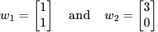
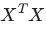
is invertible.
Consider a  matrix
matrix  satisfying
satisfying
 If trace and determinant of are 9 and 20 respectively, which of the following statements is/are necessarily true?
If trace and determinant of are 9 and 20 respectively, which of the following statements is/are necessarily true?
matrix satisfying
If trace and determinant of are 9 and 20 respectively, which of the following statements is/are necessarily true?- The matrix
 is singular.
is singular. - The trace of
 is
is  .
. - The matrix
 is singular.
is singular. - The determinant of
 is
is  .
.
Find the minimum distance between the point  and the plane
and the plane  Enter your answer correct to two decimal places.
Enter your answer correct to two decimal places.
and the plane Enter your answer correct to two decimal places.Let
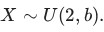
Find the value of such that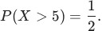
A delivery company records the time  (in hours) required to deliver a package. The delivery time has the PDF
(in hours) required to deliver a package. The delivery time has the PDF
(in hours) required to deliver a package. The delivery time has the PDF
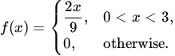
Under a new routing system, the delivery time becomes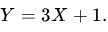
What is the expected delivery time under the new routing system?Consider the function
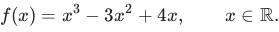
Which of the following is true? is convex on
is convex on  .
.- is concave on .
- is convex for
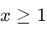
and concave for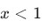
. - is neither convex nor concave on any interval.
Let be a discrete random variable such that  with
with  where
where  is an unknown parameter. Consider the random sample
is an unknown parameter. Consider the random sample  from . The maximum likelihood estimate of
from . The maximum likelihood estimate of  is:
is:
be a discrete random variable such that with where is an unknown parameter. Consider the random sample from . The maximum likelihood estimate of is:


Let  where
where  and
and  are independent. Define
are independent. Define  Which of the following is the value of
Which of the following is the value of 
where and are independent. Define Which of the following is the value of 


Consider a constrained optimization problem in  with a single inequality constraint:
with a single inequality constraint:
with a single inequality constraint: 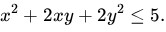
At the point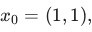
which of the following is/are feasible directions at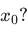
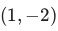
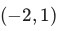

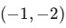
Consider the function
 where
where  is a constant. Which of the following is/are true?
is a constant. Which of the following is/are true?
where is a constant. Which of the following is/are true?- is continuous at
 for
for  .
. - is continuous at for
 .
. - is differentiable at for .
- is not differentiable at for .
Let  be a Hermitian matrix whose eigenvalues are
be a Hermitian matrix whose eigenvalues are  Which of the following statements is/are necessarily true?
Which of the following statements is/are necessarily true?
be a Hermitian matrix whose eigenvalues are Which of the following statements is/are necessarily true?- is positive definite.
- There exists a nonzero vector
 such that
such that  , where
, where  denotes the conjugate transpose of
denotes the conjugate transpose of  .
. - is invertible.
 is Hermitian.
is Hermitian.
A nonnegative random variable satisfies  Using Markov's inequality, find the smallest value of
Using Markov's inequality, find the smallest value of  such that
such that  Enter your answer as an integer.
Enter your answer as an integer.
satisfies Using Markov's inequality, find the smallest value of such that Enter your answer as an integer.Comprehension passage - the questions below it refer to this
Suppose is a real  matrix with singular values
matrix with singular values  Based on the above data, answer the given subquestions.
Based on the above data, answer the given subquestions.What is the sum of the eigenvalues of 
Inscript What is the rank of 
Answer key
- Q1 (MSQ, 4 marks): B, C
- Q2 (MSQ, 4 marks): A, B, D
- Q3 (SA, 3 marks): 1.70 to 1.76
- Q4 (SA, 3 marks): 8
- Q5 (SA, 3 marks): 7
- Q6 (MCQ, 3 marks): C
- Q7 (MCQ, 3 marks): A
- Q8 (MCQ, 3 marks): C
- Q9 (MSQ, 3 marks): A, B, D
- Q10 (MSQ, 3 marks): B, D
- Q11 (MSQ, 3 marks): B, C, D
- Q12 (SA, 2 marks): 80
- Q13 (SA, 2 marks): 34
- Q14 (SA, 1 marks): 2